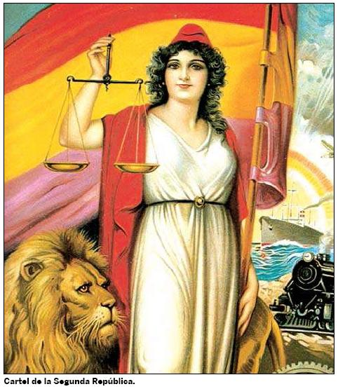
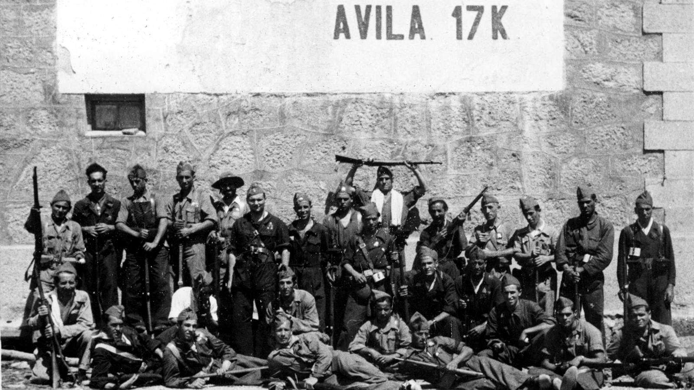

| Etapas | |
|---|---|
| Prehistoria | |
| Edad de los Metales | |
| Edad Antigua | |
| Edad Media | |
| Edad Moderna | |
| Edad Contemporánea | |
| Estatuto de Autonomía | |
| Antecedentes de la autonomía | |
| Reino de Castilla y León |
El desarrollo de la Guerra Civil Española en Castilla y León ha sido poco estudiado. Si bien es cierto que en esta comunidad no hubo guerra propiamente dicha, ya que la mayor parte del territorio, con el apoyo mayoritario de la población, quedó bajo el control de los sublevados en unos pocos días a partir del golpe militar del 18 de julio de 1936 también ha existido desidia de historiadores y especialistas de la propia región que, salvo contadas excepciones, no han considerado relevante ni necesario su estudio. En la bibliografía existente se habla sobre todo de la guerra de columnas en la sierra de Madrid y de la formación del Frente Norte. Castilla y León constituyó el germen y la sede del nuevo Estado español con la Junta de Defensa Nacional en Burgos, el Gobierno General en Valladolid y el Cuartel General del Generalísimo en Salamanca.
La guerra que tuvo lugar en Castilla y León entre 1936 y 1939 debe inscribirse en el contexto de la Guerra Civil Española (17-18 de julio de 1936 - 1 de abril de 1939) y que tuvo como origen un alzamiento militar contra el gobierno de la República Española que tenía como objetivo establecer una junta militar y suprimir el sistema parlamentario. Durante el verano de 1936 España quedó dividida en dos zonas. En la zona gubernamental, el Estado se desmoronó a causa del golpe sufrido y de la revolución social que se desencadenó. En la zona dominada por los rebeldes se impuso el estado de guerra bajo el férreo control de los jefes militares, y dio comienzo una fuerte represión. A partir de noviembre de 1936, cuando los rebeldes fueron incapaces de tomar Madrid, el golpe de estado se convirtió en una guerra civil abierta entre el gobierno legítimo de la República Española y quienes querían derrocarlo para conformar un gobierno para un nuevo Estado (autodenominado Estado español), que acabó con la victoria de este último y supuso la instauración de una dictadura, con el general Francisco Franco como Jefe del Estado hasta su muerte en 1975.
En 1936, el territorio de la actual comunidad autónoma de Castilla y León se dividía en dos regiones: León y Castilla la Vieja. Las regiones no tenían entidad administrativa.
En el territorio actualmente denominado Castilla y León los sublevados no tuvieron ningún problema para hacerse rápidamente con el control de todas las provincias. Aunque bien es cierto que el alzamiento contó con el apoyo de grandes sectores de la población, lo más característico de la Guerra Civil en Castilla y León es la represión desencadenada por las nuevas autoridades, incluso en los lugares donde no hubo ninguna resistencia (que fueron la mayor parte del territorio), represión que se cebó especialmente con los miembros de las organizaciones integrantes del Frente Popular, los alcaldes y concejales de esas organizaciones, los dirigentes de las organizaciones sindicales (en especial las sociedades de obreros del campo), los maestros y los masones.
La Segunda República Española fue el régimen democrático que existió en España entre el 14 de abril de 1931, fecha de su proclamación, en sustitución de la monarquía de Alfonso XIII, y el 1 de abril de 1939, fecha del final de la Guerra Civil, que dio paso a la dictadura franquista.
Tras el período del Gobierno Provisional (abril-diciembre de 1931), durante el cual se aprobó la Constitución de 1931 y se iniciaron las primeras reformas, la historia de la Segunda República Española «en paz» (1931-1936) suele dividirse en tres etapas. Un primer bienio (1931-1933) durante el cual la coalición republicano-socialista presidida por Manuel Azaña llevó a cabo diversas reformas que pretendían modernizar el país. Un segundo bienio (1933-1935), llamado bienio radical-cedista, durante el cual gobernó la derecha, con el Partido Republicano Radical de Alejandro Lerroux, apoyado desde el parlamento por la derecha católica de la Confederación Española de Derechas Autónomas (CEDA), que pretendió «rectificar» las reformas izquierdistas del primer bienio. Durante este bienio se produjo el acontecimiento más grave del período: la insurrección anarquista y socialista conocida como Revolución de 1934, que en Asturias se convirtió en una auténtica revolución social y que finalmente fue sofocada por el Gobierno con la intervención del ejército. La tercera etapa viene marcada por el triunfo de la coalición de izquierdas conocida con el nombre de Frente Popular en las elecciones generales de 1936, y que solo pudo gobernar en paz durante cinco meses a causa del golpe de Estado del 17 y 18 de julio promovido por una parte del Ejército que desembocó en la guerra civil española.
Durante la Segunda República Española en guerra (1936-1939) se sucedieron tres gobiernos: el presidido por el republicano de izquierda José Giral, aunque durante su corto mandato (de julio a septiembre de 1936) el poder real estuvo en manos de los cientos de comités que se formaron cuando estalló la revolución social española de 1936; el siguiente gobierno fue presidido por el socialista Francisco Largo Caballero, el líder de uno de los dos sindicatos —la Unión General de Trabajadores (UGT), junto con la Confederación Nacional del Trabajo (CNT)— que habían protagonizado la revolución; y el tercer gobierno fue presidido por el también socialista Juan Negrín, como consecuencia de la caída de Largo Caballero tras las Jornadas de Mayo, y que gobernó hasta principios de marzo de 1939, cuando se produjo el golpe de Estado del coronel Casado que puso fin a la resistencia republicana, dando paso a la victoria del bando sublevado encabezado por el general Franco. A partir de entonces la república dejó de existir en territorio español; pero sus instituciones se mantuvieron en el exilio, pues la mayoría de sus miembros había huido de España.
Tras la dimisión del general Miguel Primo de Rivera en enero de 1930, Alfonso XIII intentó devolver al debilitado régimen monárquico a la senda constitucional y parlamentaria, a pesar de la debilidad de los partidos dinásticos. Para ello, nombró presidente del Gobierno al general Dámaso Berenguer, pero este fracasó en su intento de volver a la «normalidad constitucional». En febrero de 1931 el rey Alfonso XIII ponía fin a la «dictablanda» del general Berenguer y ofreció el gobierno a Alba (líder del Partido Liberal), pero este se negó, por lo que entonces se lo entregó a Sánchez Guerra, el cual fue a la cárcel Modelo, donde estaban presos los participantes de la sublevación de Jaca y les ofreció sendas carteras ministeriales. Finalmente el rey nombraba nuevo presidente al almirante Juan Bautista Aznar, en cuyo gobierno de «concentración monárquica» entraron viejos líderes de los partidos dinásticos liberal y conservador, como el conde de Romanones, Manuel García Prieto, Gabriel Maura Gamazo (hijo de Antonio Maura) y Gabino Bugallal.El Gobierno propuso un nuevo calendario electoral: se celebrarían primero elecciones municipales el 12 de abril, y después elecciones a Cortes que tendrían el carácter de Constituyentes, por lo que podrían proceder a la revisión de las facultades de los Poderes del Estado y la precisa delimitación del área de cada uno (es decir, reducir las prerrogativas de la Corona) y a una adecuada solución al problema de Cataluña.
Las elecciones municipales del domingo 12 de abril de 1931 arrojaron, en el momento de la proclamación del nuevo régimen, unos resultados parciales de 22 150 concejales monárquicos —de los partidos tradicionales— y apenas 5875 concejales para las diferentes iniciativas republicanas, quedando 52 000 puestos aún sin determinar. Pese al mayor número de concejales monárquicos, las elecciones suponían a la Corona una amplia derrota en los núcleos urbanos: la corriente republicana había triunfado en 41 capitales de provincia. En Madrid, los concejales republicanos triplicaban a los monárquicos y, en Barcelona, los cuadruplicaban. Si las elecciones se habían convocado como una prueba para sopesar el apoyo a la monarquía y las posibilidades de modificar la ley electoral antes de la convocatoria de elecciones generales, los partidarios de la república consideraron tales resultados como un plebiscito a favor de su instauración inmediata. El marqués de Hoyos llegaría a decir que «las noticias de los pueblos importantes eran, como las de las capitales de provincia, desastrosas».Dependiendo de los autores, hay distintas interpretaciones de los resultados. La razón por la cual los resultados de los principales centros urbanos representaban la derrota de la monarquía es posible hallarla en que, en esos núcleos, el voto estaba menos adulterado, pues la presencia de caciques, partidarios en su inmensa mayoría de la monarquía, era menor. Esto daba constancia de que la corona estaba completamente desacreditada, puesto que se había arrimado demasiado al régimen dictatorial de Primo de Rivera.
A las diez y media de la mañana del lunes 13 de abril, el presidente del Consejo de Ministros, Juan Bautista Aznar-Cabañas, entraba en el Palacio de Oriente de Madrid para celebrar el Consejo de Ministros. Preguntado por los periodistas sobre si habría crisis de gobierno, Aznar-Cabañas contestó:
En la reunión del Gobierno, el ministro de Fomento, Juan de la Cierva y Peñafiel, defiende la resistencia: «Hay que constituir un gobierno de fuerza, implantar la censura y resistir». Le apoyan otros dos ministros: Gabino Bugallal, conde de Bugallal, y Manuel García Prieto, marqués de Alhucemas. El resto de los ministros, encabezados por el conde de Romanones, piensan que está todo perdido, sobre todo cuando se van recibiendo las respuestas titubeantes de los capitanes generales al telegrama que les ha enviado horas antes el ministro de la guerra, el general Dámaso Berenguer, y en el que les ha aconsejado seguir «el curso que les imponga la suprema voluntad nacional».
A primeras horas de la mañana del martes 14 de abril, el general Sanjurjo, director de la Guardia Civil, se dirige a la casa de Miguel Maura, donde se encuentran reunidos los miembros del comité revolucionario que no estaban exiliados en Francia, ni escondidos: Niceto Alcalá-Zamora, Francisco Largo Caballero, Fernando de los Ríos, Santiago Casares Quiroga y Álvaro de Albornoz. Nada más entrar en la casa, el general Sanjurjo se cuadra ante Maura y le dice: «A las órdenes de usted, señor ministro».Por su parte, el rey Alfonso XIII le pide al conde de Romanones, viejo conocido de Niceto Alcalá-Zamora, que este se ponga en contacto con él para que, como presidente del comité revolucionario, le garantice su salida pacífica de España y la de su familia. A la una y media de la tarde tiene lugar la entrevista en casa del doctor Gregorio Marañón, quien había sido médico del rey y que ahora apoyaba la causa republicana. El conde de Romanones le propone a Alcalá-Zamora crear una especie de gobierno de transición o incluso la abdicación del rey en favor del príncipe de Asturias. Pero Alcalá-Zamora exige que el rey salga del país «antes de que se ponga el sol». Y le advierte: «Si antes del anochecer no se ha proclamado la república, la violencia del pueblo puede provocar la catástrofe»
La guerra civil española o guerra de España, también conocida por los españoles como la Guerra Civil por antonomasia,o simplemente la Guerra, fue un conflicto bélico —que más tarde repercutiría también en una crisis económica— que se desencadenó en España tras el fracaso parcial del golpe de Estado del 17 y 18 de julio de 1936 llevado a cabo por una parte de las fuerzas armadas contra el Gobierno de la Segunda República. Tras el bloqueo del Estrecho y el posterior puente aéreo que, gracias a la rápida colaboración de la Alemania nazi y la Italia fascista, trasladó las tropas rebeldes a la España peninsular en las últimas semanas de julio,comenzó una guerra civil que concluiría el 1 de abril de 1939 con el último parte de guerra firmado por Francisco Franco, declarando su victoria y estableciendo una dictadura que duraría hasta su muerte, el 20 de noviembre de 1975.
La guerra tuvo múltiples facetas, pues incluyó lucha de clases, guerra de religión, enfrentamiento de nacionalismos opuestos, lucha entre dictadura militar y democracia republicana, entre revolución y contrarrevolución, entre fascismo y comunismo.
A las partes del conflicto se las suele denominar bando republicano y bando sublevado:
El bando republicano estuvo constituido en torno al Gobierno, formado por el Frente Popular, que a su vez se componía de una coalición de partidos republicanos —Izquierda Republicana y Unión Republicana— con el Partido Socialista Obrero Español, a la que se habían sumado los marxistas-leninistas del Partido Comunista de España y el POUM, el Partido Sindicalista de origen anarquista y en Cataluña los nacionalistas de izquierda encabezados por Esquerra Republicana de Catalunya. Era apoyado por el movimiento obrero y los sindicatos UGT y CNT, los cuales también perseguían realizar la revolución social. También se había decantado por el bando republicano el Partido Nacionalista Vasco, cuando las Cortes republicanas estaban a punto de aprobar el Estatuto de Autonomía para el País Vasco.
El bando sublevado, que se llamó a sí mismo «bando nacional», estuvo organizado en torno a parte del alto mando militar, institucionalizado inicialmente en la Junta de Defensa Nacional sustituida tras el nombramiento de Francisco Franco como generalísimo y jefe del Gobierno del Estado. Políticamente, estuvo integrado por la fascista Falange Española, los carlistas, los monárquicos alfonsinos de Renovación Española y gran parte de los votantes de la CEDA, la Liga Regionalista y otros grupos conservadores. Socialmente fue apoyado por aquellas clases a las que la victoria en las urnas del Frente Popular les hizo sentir que peligraba su posición; por la Iglesia católica, acosada por la persecución religiosa desatada por parte de la izquierda nada más estallar el conflicto y por pequeños propietarios temerosos de una «revolución del proletariado». En las regiones menos industrializadas o primordialmente agrícolas, los sublevados también fueron apoyados por numerosos campesinos y obreros de firmes convicciones religiosas.
Las consecuencias de la Guerra Civil han marcado en gran medida la historia posterior de España, por lo excepcionalmente dramáticas y duraderas: tanto las demográficas —mortandad y descenso de la natalidad que marcaron la pirámide de población durante generaciones— como las materiales —destrucción de las ciudades, la estructura económica, el patrimonio artístico—, intelectuales —fin de la denominada Edad de Plata de las letras y ciencias— y políticas —la represión en la retaguardia de ambas zonas, mantenida por los vencedores con mayor o menor intensidad durante todo el franquismo, y el exilio republicano—, y que se perpetuaron mucho más allá de la prolongada posguerra, incluyendo la excepcionalidad geopolítica del mantenimiento del régimen de Franco hasta 1975.